SIO 2 Bloc 2 Administration et exploitation des services ServerWeb et VirtualHost
Redirection des dommaines via des VirtualHosts – TLS - HTTPSInstallation d'un serveur LAMP (Linux/Apache/MySQL/PHP)** LAMP signifie :
- Linux (Debian 12)
- Apache2 (serveur web)
- MariaDB (base de données)
- PHP (langage serveur)
sudo apt install apache2
sudo apt install php mariadb-server php-mysql libapache2-mod-php
Notes
- apache2 → installe le serveur web.
- php et libapache2-mod-php → permettent à Apache d’interpréter les pages PHP.
- mariadb-server et php-mysql → ajoutent la base de données et le connecteur PHP.
Création des VirtualHost
Héberger plusieurs sites web sur le même serveur grâce à des noms de domaine différents (ex. www0 et www1).
sudoedit /etc/apache2/sites-available/www0.conf
ServerName www0.dortmund.cub.sioplc.fr
ServerAlias www0.dortmund.cub.sioplc.fr
ServerAdmin etudiant@dortmund.cub.sioplc.fr
ErrorLog /var/log/apache2/www0.dortmund.cub.sioplc.fr-error_log
CustomLog /var/log/apache2/www0.dortmund.cub.sioplc.fr-access_log combined
DocumentRoot "/var/www/html/www0" #Doit etre le meme chemin de ton installation WordPress, là où se trouvent tous les fichiers du site (wp-admin, wp-content, wp-config.php, etc.).
Options Indexes FollowSymLinks
AllowOverride All
Require all granted
Apres avoir configurer nos VHOST, sudo a2ensite www0
sudo systemctl reload apache2
Installation de Wordpress
URL : IP du serveur
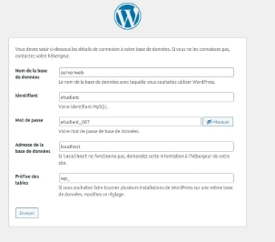
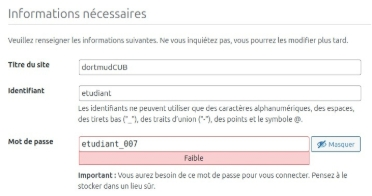
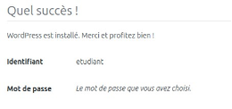
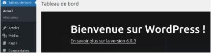
Configurer le serveur DNS autoritaire
Dans le fichier de zone du serveur nous alons rajouter les enregitrement correctement afin de faire des correspondence IP et des Alias pour la redirection
Dans : var/cache/bind/db.dortmund.cub.sioplc.fr
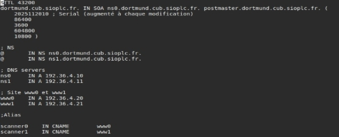
Ne pas oublier de redémarrer le service apres avoir modifier des enregistrement dans la configuration
sudo systemctl restart bind9
Configuration du site via GIT Clone
Nous avons un depot git sut github, nous avons juste a recuperer le liens du depot
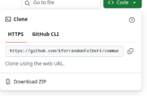
Puis nous allons dans
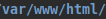
Pour introduire le clone du git dans le dossier pour « scanner0 » mkdir scanner0
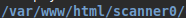
sudo git clone « lien copié »
Puis nous pouvons voir un nouveau dossier crée avec le clone ainsi que toutes les dépendances
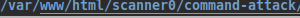
Ne pas oublier de changer le chemin de notre VirtualHost
ServerName scanner0.dortmund.cub.sioplc.fr
ServerAlias scanner0.dortmund.cub.sioplc.fr
ServerAdmin etudiant@dortmund.cub.sioplc.fr
ErrorLog /var/log/apache2/scanner0.dortmund.cub.sioplc.fr-error_log
CustomLog /var/log/apache2/scanner0.dortmund.cub.sioplc.fr-access_log combined
|
/command-attack |
|---|---|
|
AllowOverride All
Require all granted
Apres avoir configurer nos VHOST, sudo a2ensite www0
sudo systemctl reload apache2
Pour tester, idem nous allons maintenant taper l’URL http://scanner0.dortmund.cub.sioplc.fr/command-attack/
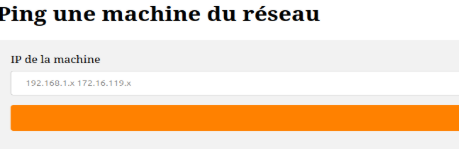
Maintenant il est question de sécurise l’accès a ce Vhost car celui-ci contrairement au WordPress est priver, nous allons essayer de demander un login et un mot de passe pour accéder au service 1. ## Activer les modules Apache requis sudo a2enmod auth_basic sudo a2enmod authz_host sudo systemctl restart apache2 2. ## Créer le fichier htpasswd sudo htpasswd -c /etc/apache2/.htpasswd admin
(Un mot de passe sera demandé)
Identifiant : admin
Mot de passe : etudiant_007
ServerName scanner0.dortmund.cub.sioplc.fr
ServerAlias scanner0.dortmund.cub.sioplc.fr
ServerAdmin etudiant@dortmund.cub.sioplc.fr
DocumentRoot "/var/www/html/scanner0/command-attack/"
AllowOverride All
AuthType Basic
AuthName "Accès restreint - Scanner Réseau" AuthUserFile /etc/apache2/.htpasswd
Require ip 192.168.4.192/28 Require valid-user
ErrorLog ${APACHE_LOG_DIR}/scanner0-error.log
CustomLog ${APACHE_LOG_DIR}/scanner0-access.log combined
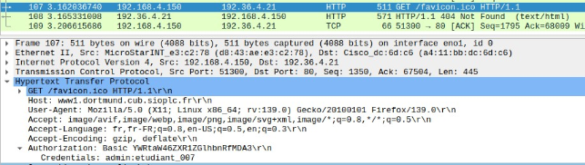
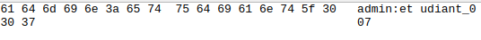
Généré mon certificat auto-signé Attention ! Un certificat utilise = un site
sudo mkdir certs
cd certs/
sudo openssl req -newkey rsa:4096 -keyout docs.key -x509 -days 365 -out docs.crt
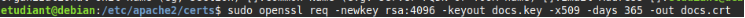
Explication :
- sudo : exécute la commande avec les droits administrateur.
- openssl req : lance la création d’une demande de certificat (CSR) ou d’un certificat auto-signé.
- -newkey rsa:4096 : génère une nouvelle clé privée RSA de 4096 bits.
- -keyout docs.key : enregistre la clé privée générée dans le fichier docs.key ( « docs » = mettre nom de notre serveur web)
- -x509 : crée directement un certificat X509 auto-signé (pas seulement une demande).
- -days 365 : définit la durée de validité du certificat à 365 jours.
- -out docs.crt : enregistre le certificat généré dans le fichier docs.crt. ( « docs » = mettre nom de notre serveur web)
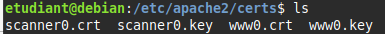
Passphrase : etudiant_007
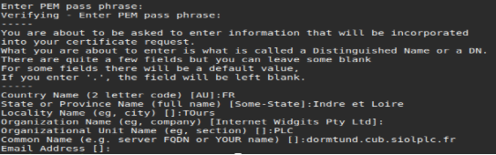
Modification de mes virtualhosts
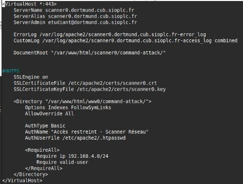
| / | 443 = port HTTP |
|---|---|
| Ajouté la configuration SSL obligatoire SSLEngine on |
SSLCertificateFile /etc/apache2/certs/scanner0.crt //Elles servent à activer HTTPS +
charger ton certificat auto-signé.
SSLCertificateKeyFile /etc/apache2/certs/scanner0.key sudo service apache2 reload // Besoins de la Passphrase
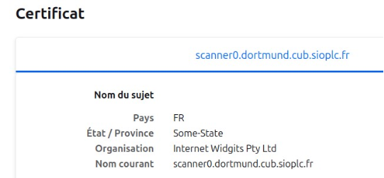
SIO 2 - Bloc 2 - Administration et exploitation des services - Contexte : CUB